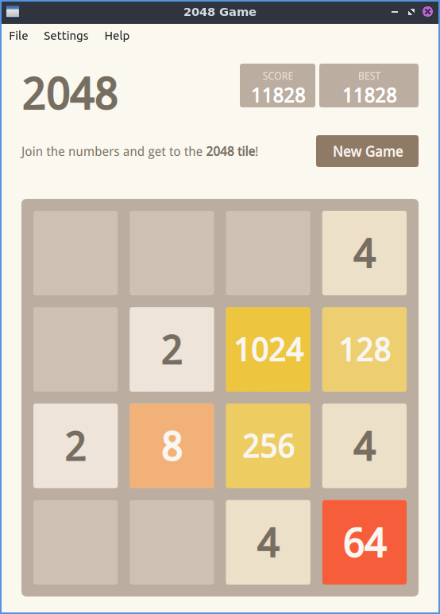

Chapter 2.6.1 2048-Qt¶
2048 is a fun simple lightweight game included in Denios-OS by default.
Usage¶
To play 2048-qt you use the arrows keys to combine blocks with the same number on them without having no possible moves at which point the game is over. As you move the blocks all the blocks in the game move in the direction of the arrow key your press. As you combine numbers your score increases by the sum of the block(s) you combine and is shown towards the upper right hand corner of the window. After each move a new block appears. In the upper right hand corner is your BEST score in the game. To the left of you high score is your SCORE with the number of your current score. When your score increases you will see a +x where x is the number your score increases by.
If midway you want to restart to a new game press the New Game button on the right hand side or or press Control+N. If you want to close 2048-Qt from the keyboard press Control+Q.
Screenshot¶
Version¶
Denios-OS ships with version 0.1.6 of 2048-Qt.
How to Launch¶
To launch 2048-Qt go to the menu or run
2048-qt
from the command line. The icon for 2048-Qt looks like a green square with 2048 written in white text.